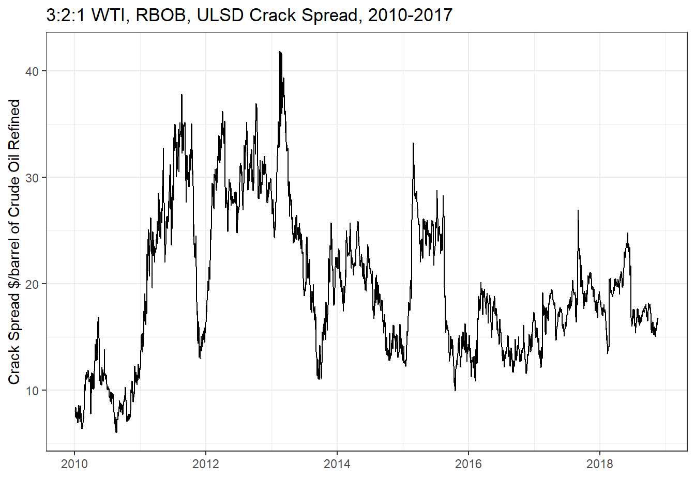
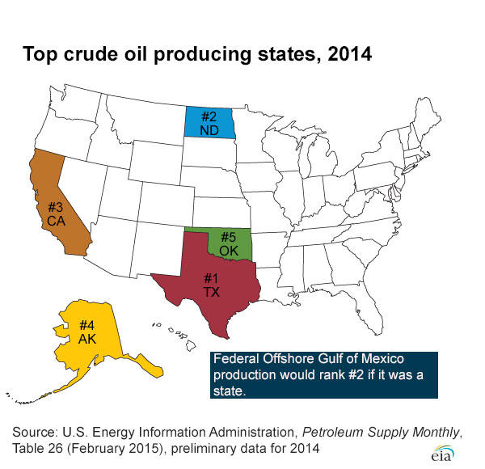
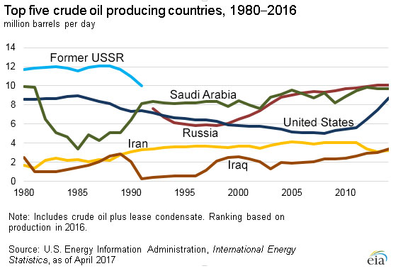

{kind=link}
{kind=link}

20 Crude Oil and the Crack Spread
Interested in more? Please let me know by taking the survey!
Crude oil is an extremely important commodity. Much of the world’s economic activity is dependent on the energy products derived from this commodity. Crude oil was formed long ago when biological material fell to the bottom of ancient oceans. Over time the material was exposed to heat and pressure and transformed the material into crude oil. Crude oil is composed of a mix of different hydrocarbons, molecules that contain both hydrogen and carbon atoms. When these molecules are broken down and then recombined in different configurations, different materials like gasoline, diesel fuel, heating oil, jet fuel, and kerosene can be made. Obviously, crude oil and its derivative products are valued for the energy stored in the hydrocarbon molecules.
Introduction to Crude Oil by The Atlantic
20.1 Light versus Heavy/Sweet versus Sour
Not all crude oil is created equal. The components that make up the material can vary greatly affecting what kinds of products crude oil can be refined into. For example, if the crude oil is composed of large hydrocarbon molecules, it is referred to as heavy crude oil. Crude oil that has mainly smaller molecules is called light crude oil. Light crude oil can be more easily turned into higher valued gasoline and distillates while heavy crude oil produces more lubricating oil and coke.
Light crude oil flows more freely, while heavy crude oil is more viscous. Specifically, the American Petroleum Institute gravity (API gravity) is a measure of how heavy crude oil is compared to water. If API gravity is greater than 10 the crude oil will float on water. If it is less than 10 the crude oil will sink. Crude oil is considered light if it has an API gravity higher than 31.1 degrees.
Crude oil is also classified as sweet or sour. This refers to the sulfur content of the crude oil. Sweet crude oil contains less than 0.5% sulfur. It is easier to refine because sulfur does not need to be removed. Sulfur content of diesel is regulated and diesel fuel in the US and Europe have limited the quantity of sulfur allowed, so sweet crude oil is valued more highly than sour crude oil.
Sulfur is also highly corrosive, increasing the cost of maintaining refineries, and exposure to hydrogen sulfide is dangerous, so it must be removed from sour crude oil before transporting.
20.1.1 Light, Sweet: WTI and Brent Crude Oil
Because of its desirable qualities, light sweet crude oil is the most valuable classifications of crude oil in the world. When you hear people talk about crude oil prices, they almost always are referring to the price of light sweet crude oil, because of its importance in producing the majority of the worlds liquid transportation fuel and a significant portion of heating fuel.
- WTI Crude Oil Price
-
The West Texas Intermediate crude oil price is a benchmark price for light sweet crude oil produced in North America. The NYMEX futures contract for Light Sweet Crude Oil is the WTI price delivered at Cushing, OK.
The EIA states that crude oil is produced in 31 U.S. states and in U.S. coastal waters. In 2014, about 65% of U.S. crude oil production came from five states:
- Texas (37%)
- North Dakota (13%)
- California (6%)
- Alaska (6%)
- Oklahoma (4%)

Source: US Energy Information Administration
- Brent Crude Oil
-
The Brent Crude Oil price is the benchmark for light sweet crude oil extracted from the North Sea. Since it is slightly more sour than WTI crude, it often trades at a discount to WTI crude, but the spread can be affected by local supply and demand factors.
.png)
Source: US Energy Information Administration Public domain, via Wikimedia Commons
Globally, the top five oil producing countries are: Russia, the United States, Saudi Arabia, China, and Canada.

20.2 Refining Crude Oil
The exact proportions of refined products that can be produced from a barrel of oil can be varied by changing to refining process if one product is preferred over another. However, higher valued products are more costly to produce, and the proportions can only be varied to an extent. Refiners could never produce 100% gasoline from a barrel of oil, for example.
The characteristics of the oil described above (light/heavy and sweet/sour) impact the proportion of products possible. The figure below shows the rough yield of various refined products from a 42 gallon barrel of oil.

Source: US Energy Information Administration
20.2.1 Gasoline
Gasoline is the refined product that most people are familiar with because it is the dominant liquid fuel for the automobiles driven by the average American consumer.
20.2.2 Distillates: Diesel, Heating Oil, Jet Fuel, Kerosene
Distillates are lesser known among the general public. However, Diesel, which is most familiar to consumers, is chemically very similar to heating oil, jet fuel, and kerosene.
Heating oil is used to heat homes in the Northeast U.S., whereas in other parts of the country natural gas, propane, and electricity are more prominent fuels for home heating.
20.3 Price Trends
The following figure shows WTI and Brent monthly spot prices from May 1987 to September 2016.

Prices experienced a dramatic uptrend then downtrend in 2008-2009 that was experienced across many commodities. Most recently, crude oil prices have been in a severe downturn. The recent downtrend has been characterized by a historically unprecedented divergence between WTI and Brent crude oil prices.

Recall that WTI is a North American benchmark for light sweet crude oil, while Brent is a European benchmark for light sweet crude oil. In the next section we will discuss how rapidly increasing production in the U.S. Bakkan formation of North Dakota has contributed to weak price levels and historically weak WTI price compared to the Brent price.
20.4 Fundamental Factors
A number of supply and demand statistics are maintained by the Energy Information Administration. Information on prices, crude reserves and production, refining and processing, imports, and movements, and stocks can be found at the EIA website.
20.4.1 Production of Crude, Gasoline, and Distillates
The figure below shows U.S. field production of Crude oil in thousand barrels per day. Production was in a downward trend since the mid 1980’s, but since about 2008 production has rapidly increased. This is due to extensive drilling in the Bakkan formation after hydrolic fracturing techniques were developed to enable cost effective extraction.

The figures below show the number of wells in 2008 and 2013 and demonstrates the rapid development of the crude oil extraction industry in the region.

Source: “Bakken Wells 2008” by US Geological Survey - Licensed under Public Domain via Commons

Source: “Bakken Wells 2013” by US Geological Survey, 2013 - Licensed under Public Domain via Commons
20.4.2 Inventories of Crude, Gasoline, and Distillates
The figure below shows weekly U.S. ending stocks of Crude oil in thousands of barrels. You can see a dramatic spike in stocks starting at the beginning of 2015. This supply glut culminated in the weak prices over the summer. An export ban on U.S. crude oil makes the effect even stronger.

20.4.3 Geopolitical Events
Occasionally political unrest will occur in prominent crude oil producing regions causing a temporary supply disruption or fear of supply disruption that can cause short term spikes in crude oil prices.
20.5 The Crack Spread
The Crack Spread is a spread trade in crude oil, gasoline, and ultra low sulfur diesel futures contracts that roughly mimics the refiners margin. Like the soybean crush and cattle crush, it can be used to hedge or speculate on these margins. The spread trade consists of a 3-2-1 ratio. Three contracts of crude oil, two contracts of RBOB gasoline, and one contract of Ultra low sulfur diesel.
In the figure above we plot the historical 3:2:1 crack spread using the nearby WTI, RBOB, and Ultra low sulfer deisel futures contracts from the NYMEX. To compute the 3:2:1 crack spread in $ per barrel use the following formula:
Equation 1: \(Crack \text{ } Spread = (2*P_{RBOB}*42 + 1*P_{ULSD}*42 - 3*P_{CrudeOil})/3\)
where \(P_{RBOB}\), \(P_{ULSD}\), and \(P_{CrudeOil}\) are the futures prices for RBOB gasoline ($/gallon), ultra low sulfer deisel ($/gallon), and crude oil ($/barrel). The 42’s in the equation translate the price quotes, which are in $/gallon, to $/barrel. The 2, 1, and 3 reflect the fact that if you refine 3 barrels of crude oil you will get back roughly 2 barrels of gasoline and 1 barrel of ULSD.
20.6 Exercises
The exercises for this chapter have us forecast the crude oil crack spread using time series econometric techniques on NYMEX futures prices for WTI crude oil, RBOB gasoline, and ultra low sulfer deisel (ULSD). We will utilize the following regression model:
Equation 2:
\[\begin{align} Crack Spread_t &= Crack Spread_{t-1} + Crack Spread_{t-2} \\ & + \Delta Crude_{t-1} + \Delta RBOB_{t-1} + \Delta ULSD_{t-1} + \epsilon_t \end{align}\]where \(Crack Spread_t\) is defined as in equation 1, and the remaining variables are first differences of logged prices (\(\Delta Crude_{t-1} = ln(Crude_{t-1}) - ln(Crude_{t-2})\)). Recall from chapter 17 that in order for the statistical properties of the variables we are using to be appropriate for the linear regression we need all the variables to be stationary. That explains why we used the first differences of logged prices of the component prices in the crack spread, since futures prices are often found to be non-stationary and first differences of logged prices are usually stationary.
Additionally, the \(Crack Spread_t\) variable is likely to be stationary, even thought it is a linear combination of prices that are not stationary. The reason for that is because the linear combination reflects the profit margin in a real business model. It simply cannot be that profits in such a competitive business as oil refining could wander higher without bound, as in a non-stationary random walk price model.
In statistics, this kind of thing is called cointegration. It simply says that sometimes the linear combination of non-statioanary variables turns out to be stationary, and that basically, they kind of move together. For us, it means that the regression specified in equation 2 is a stationary variable regressed on a bunch of other stationary variables, which makes it more or less fine to do OLS (We really should confirm this fact with an ADF test, but we will skip that).
Download the Excel file containing the data for this exercise.
Create the \(CrackSpread_t\), \(CrackSpread_{t-1}\), and \(CrackSpread_{t-2}\) variables following equation 1.
Create the \(\Delta Crude_{t-1}\), \(\Delta RBOB_{t-1}\), and \(\Delta ULSD_{t-1}\) variables.
Regress \(CrackSpread_t\) on \(CrackSpread_{t-1}\), \(CrackSpread_{t-2}\), \(\Delta Crude_{t-1}\), \(\Delta RBOB_{t-1}\), and \(\Delta ULSD_{t-1}\).
Calculate the 1-step ahead forecast of the Crack Spread from this model.
Calculate the 95% confidence interval around this forecast.
Plot the historical crack spread, your 1-step ahead forecasts, and the 95% confidence interval on a chart in Excel.